Create diagram from eXtreme Gammon id
ggboard.RdGenerate a ggplot2::ggplot() object containing a backgammon diagram
from an eXtreme Gammon id string
Arguments
- xgid
character
- bearoff
character. Side to bear off from. Either "right" (default) or "left"
- scheme
name of color scheme, defaults to "bw"
Examples
# Starting position:
ggboard("XGID=-b----E-C---eE---c-e----B-:0:0:1:52:0:0:3:0:10")
#> Warning: No shared levels found between `names(values)` of the manual scale and the
#> data's colour values.
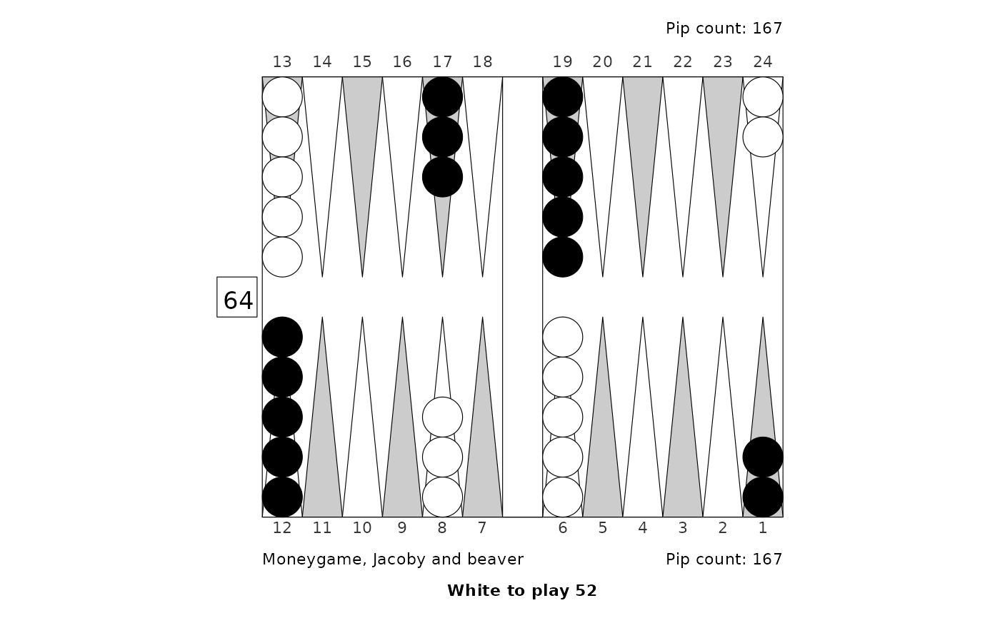
# Middle game position, match to 11, bottom player owns cube
ggboard("XGID=-b--BBC-C---cC---cBbc-b---:1:1:1:00:0:0:0:11:10")
#> Warning: No shared levels found between `names(values)` of the manual scale and the
#> data's colour values.
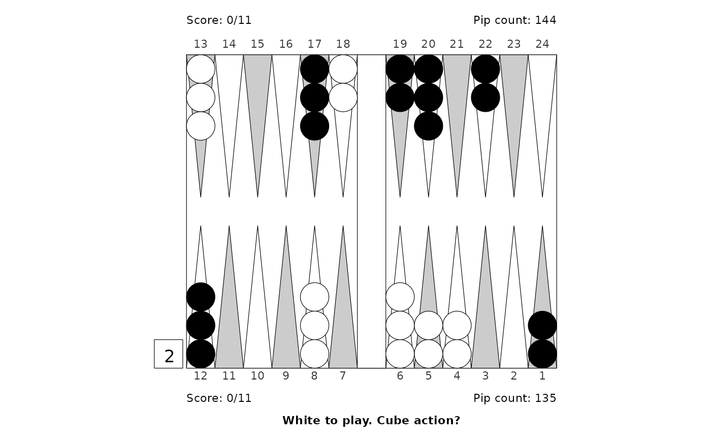
# Same position, bottom player to play 51:
ggboard("XGID=-b--BBC-C---cC---cBbc-b---:1:1:1:51:0:0:0:11:10")
#> Warning: No shared levels found between `names(values)` of the manual scale and the
#> data's colour values.
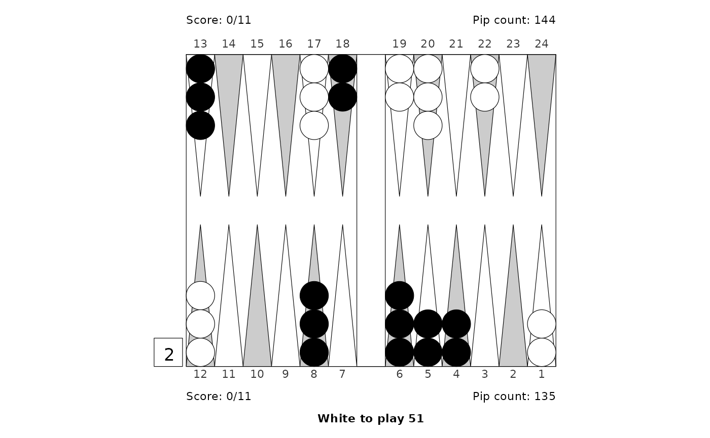
# Position with multiple checkers off and one on the bar:
ggboard("XGID=aFDaA--------------a-Acbb-:1:-1:1:42:3:0:0:7:10")
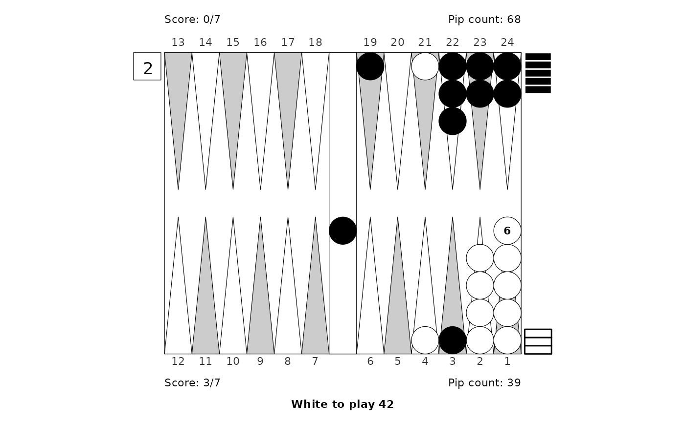
# Same position, bear off at the left:
ggboard("XGID=aFDaA--------------a-Acbb-:1:-1:1:42:3:0:0:7:10", "left")
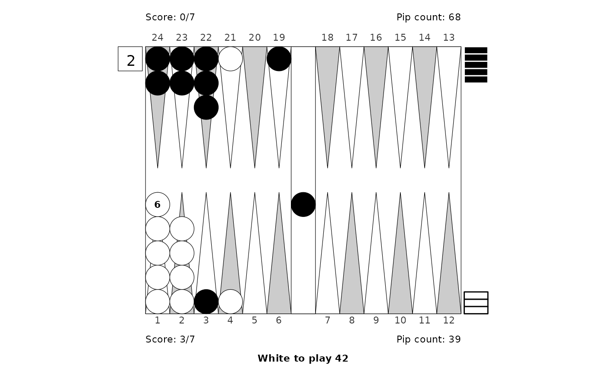
# Both sides have several points with excess checkers:
ggboard("XGID=e----FI------------fd-----:3:-1:1:52:0:0:3:0:10")
 # Opening game, match to 3, Crawford:
ggboard("XGID=-b---BD-B---cE--abbe----B-:0:0:1:44:2:0:1:3:10")
#> Warning: No shared levels found between `names(values)` of the manual scale and the
#> data's colour values.
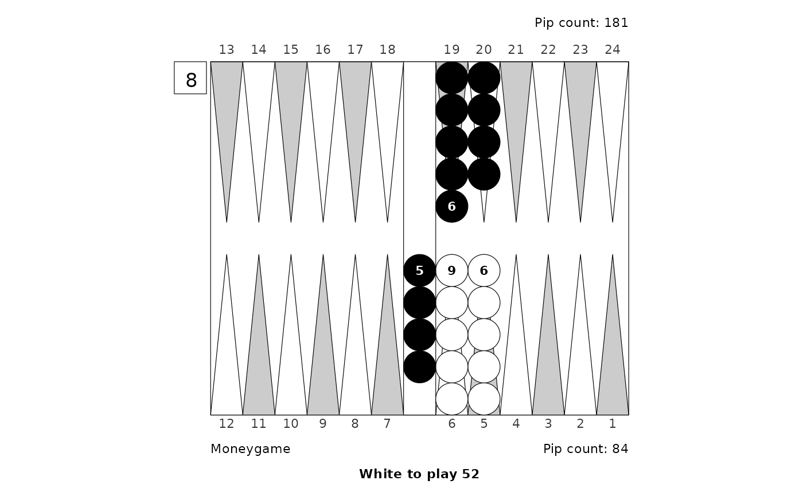
# Moneygame with beaver and Jacoby rule (Kauder paradox)
ggboard("XGID=-BBBBBC------A--caacbbba-A:0:0:1:00:0:0:3:0:10")
#> Warning: No shared levels found between `names(values)` of the manual scale and the
#> data's colour values.
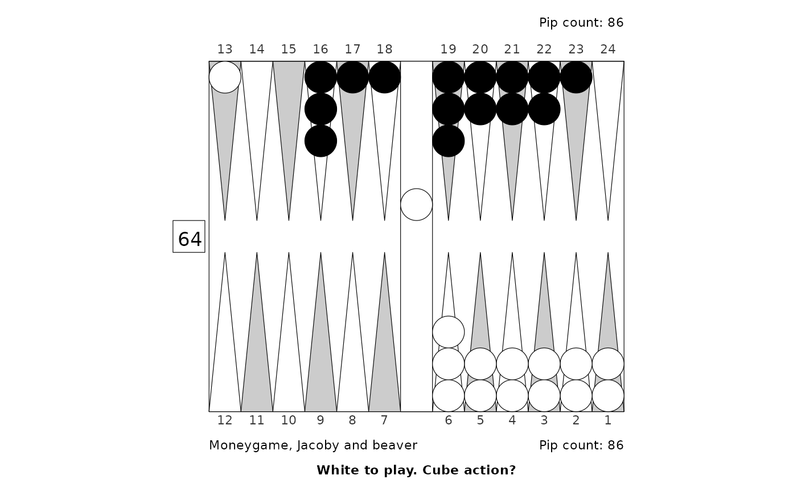
# ggboard() returns a ggplot object; you can add title and more
id <- "XGID=-a--BBCBB--A-C----bbdbb-b-:1:1:1:00:2:0:0:5:10"
ggboard(id) +
ggplot2::labs(title = "Should White double, should Black take?",
subtitle = "This one is tough",
caption = id)
#> Warning: No shared levels found between `names(values)` of the manual scale and the
#> data's colour values.
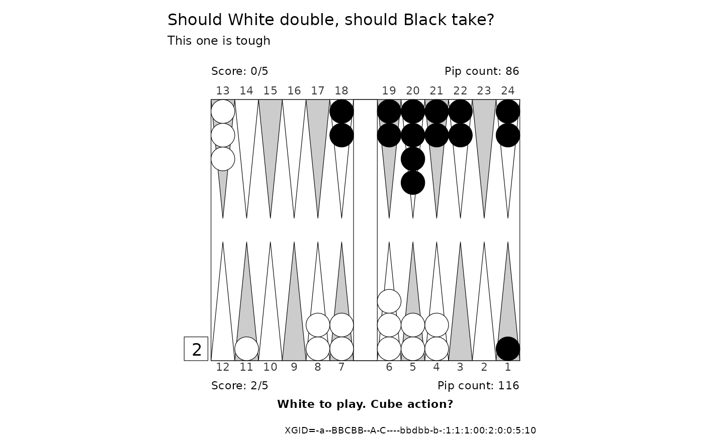
# All checkers off, just to see how that looks like:
ggboard("XGID=--------------------------:1:-1:1:00:3:0:0:7:10")
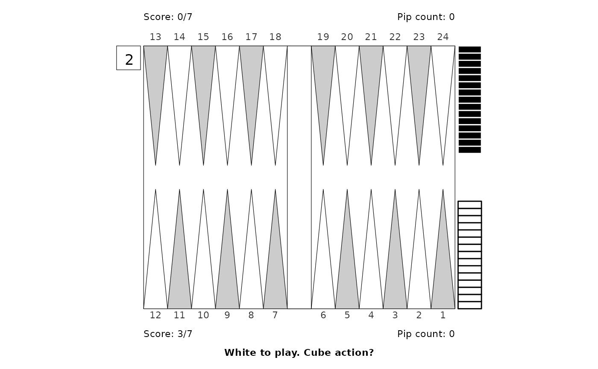
# Opening game, match to 3, Crawford:
ggboard("XGID=-b---BD-B---cE--abbe----B-:0:0:1:44:2:0:1:3:10")
#> Warning: No shared levels found between `names(values)` of the manual scale and the
#> data's colour values.
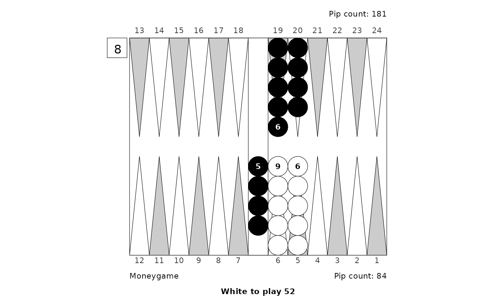
# Moneygame with beaver and Jacoby rule (Kauder paradox)
ggboard("XGID=-BBBBBC------A--caacbbba-A:0:0:1:00:0:0:3:0:10")
#> Warning: No shared levels found between `names(values)` of the manual scale and the
#> data's colour values.
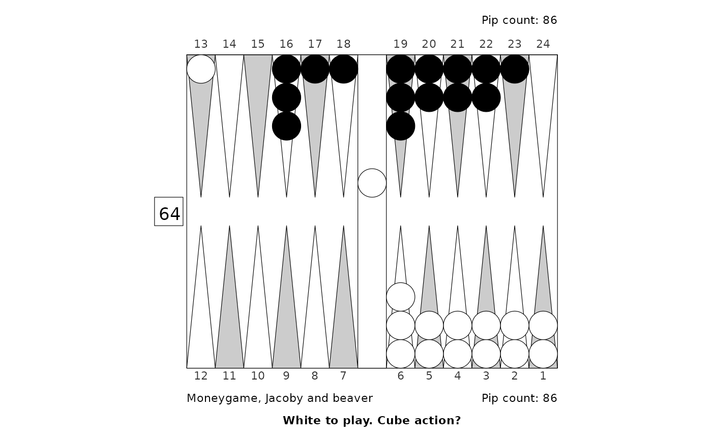
# ggboard() returns a ggplot object; you can add title and more
id <- "XGID=-a--BBCBB--A-C----bbdbb-b-:1:1:1:00:2:0:0:5:10"
ggboard(id) +
ggplot2::labs(title = "Should White double, should Black take?",
subtitle = "This one is tough",
caption = id)
#> Warning: No shared levels found between `names(values)` of the manual scale and the
#> data's colour values.
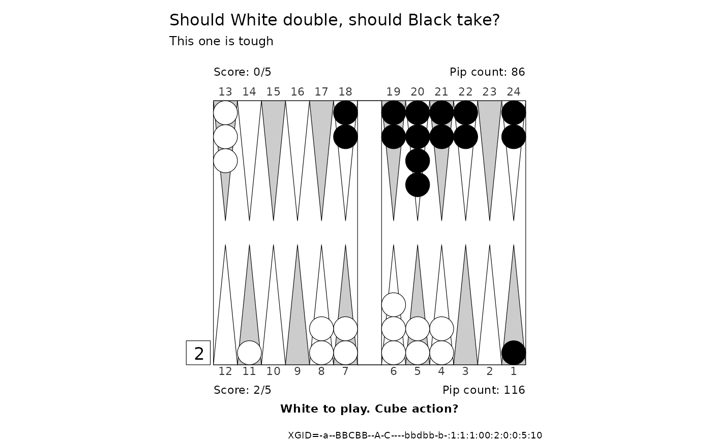
# All checkers off, just to see how that looks like:
ggboard("XGID=--------------------------:1:-1:1:00:3:0:0:7:10")
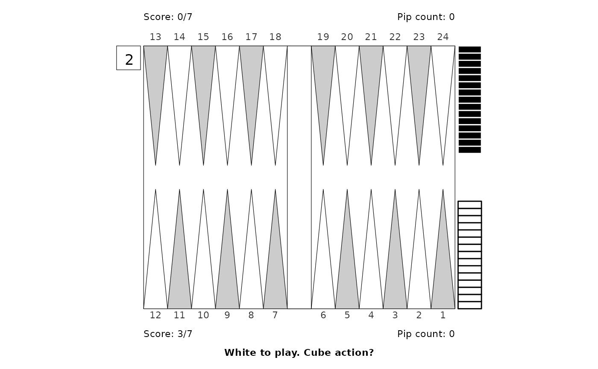